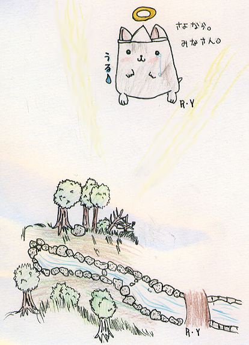

このページは故下山孝さんの「北摂の生き物」をご遺族の了解のもと
池田・人と自然の会
が転載しています。一部データが欠けている部分があります。

ハミーのお母さんがなくなって数日(すうじつ)後、ハミーがなくなりました。
学級のみんなが大切にめんどうをみてくれました。
ほんとうに、ありがとう。
ハミーのお父さんはとても元気です。
いつか次のハミーがうまれてほしいと思っています。
これからも、応援(おうえん)してください。
ハムチャンのページにもどる
はじめにもどる